Abrió un solo ojo , como si temiera que los dos le confirmaran excesivamente la panza de burro del cielo , la obscenidad de aquella piel gris y terca que ensuciaba el paisaje tropical de lujo , convertía el arbolado en una infame turba de palmeras y plataneras de plomo oxidado.
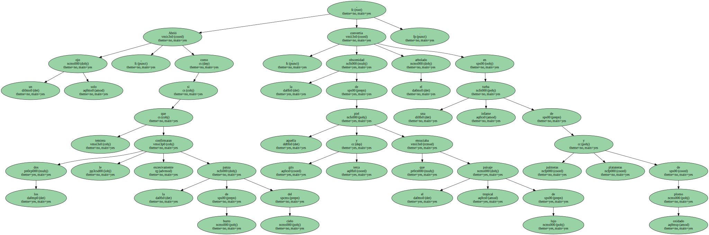Una esperanza de esquina de cielo azul se insinuaba hacia el noreste.
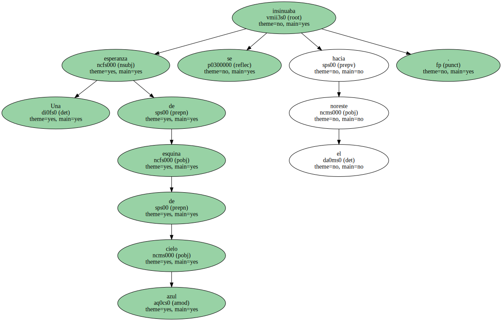- - Maracas Bay.
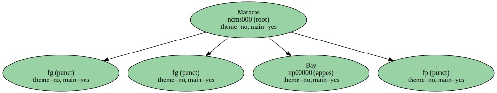Se dijo con resignación mientras se daba impulso para saltar de la cama y quedar sentado , sorprendido por sus propias piernas desnudas , esperando órdenes , con la huesuda proa rotular apuntando la maleta abierta , semillena , manteniendo desde hacía días el mismo equilibrio sobre un pequeño butacón.
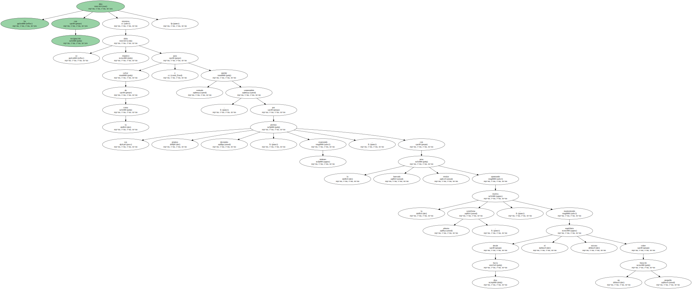Los codos sobre los muslos , la cara entre las manos abiertas , el peso de la cabeza ocupada por el rostro en primer plano de la chica de la agencia de viajes de San Francisco.
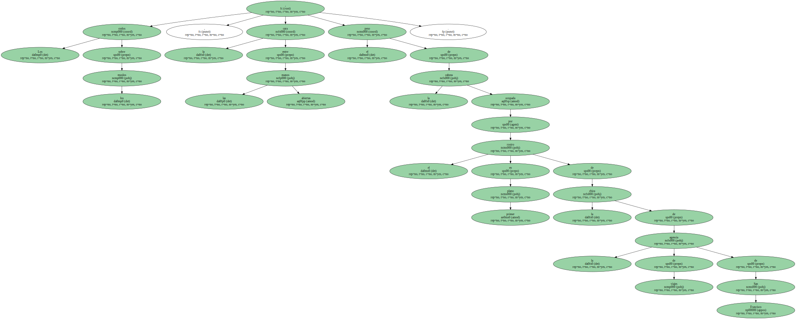- - Escoja Trinidad y Tobago , están juntas.
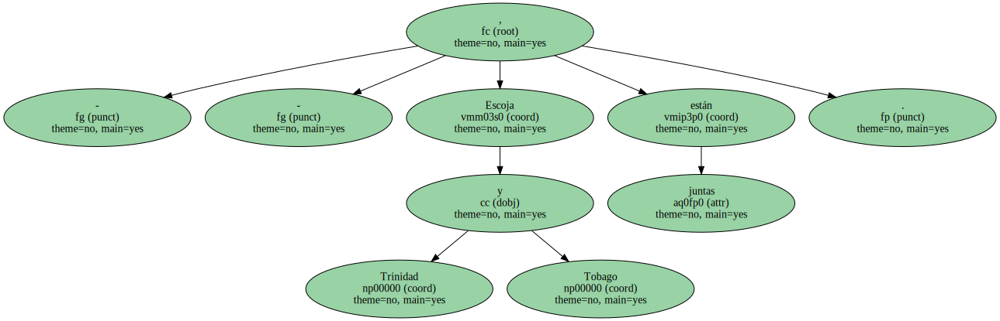No se arrepentirá.
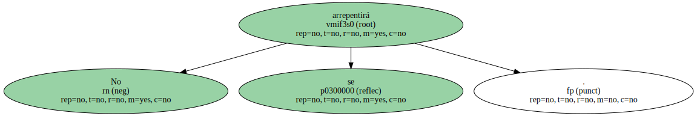- - Me da igual cualquier isla , sólo quiero sol y palmeras.
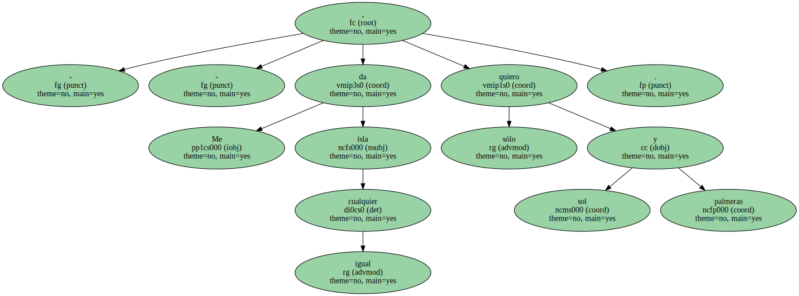Aruba , Curaçao , Bonaire.
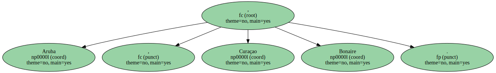- - Trinidad y Tobago.
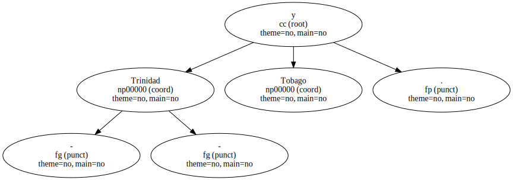No se arrepentirá.
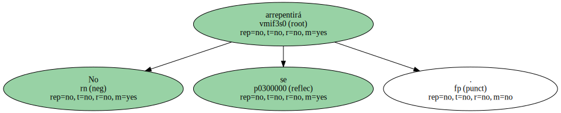Ya no le quedaban fuerzas ni para arrepentirse.

Cada día contemplaba el cielo a través de la ventana de su habitación del Holiday Inn y la panza de burro estaba allí , como estaba allí esa esquina azulada a la que peregrinaban sus ojos una y otra vez para jugar al escondite con un sol tuberculoso y esquivo.
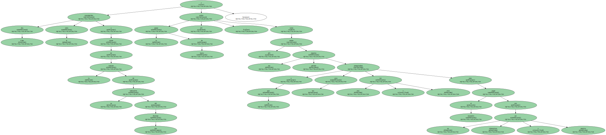- - Maracas Bay.
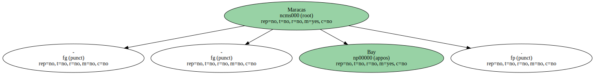Todo antes que quedarse en la encerrona de Port Spain , recorrer otra vez la retícula tediosa de calles que le llevaban a la Savannah , la misma Savannah de todas las islas del Caribe , la nostalgia de Africa convertida en una plaza mayor-pradera , quizá ninguna tan enorme como la de Port Spain pero que se la metan en el culo la Savannah , y el Jardín Botánico y la arquitectura colonial de la Woodford Square , las casonas grandilocuentes de la Maraval Road.
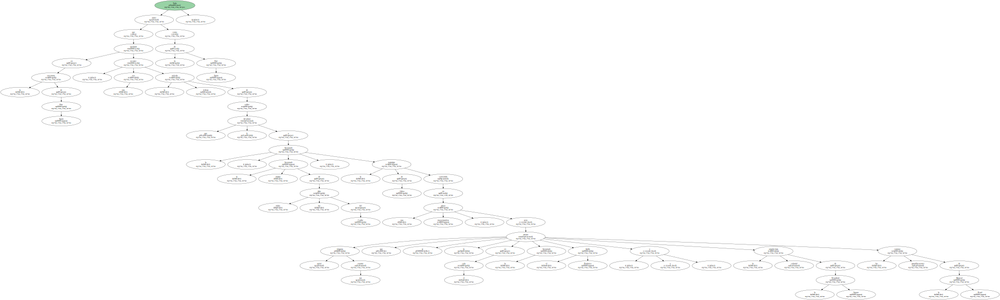- - - Ha visto usted las siete mansiones de ' Maraval Road ' ? - - le preguntaría una vez más el taxista hindú.
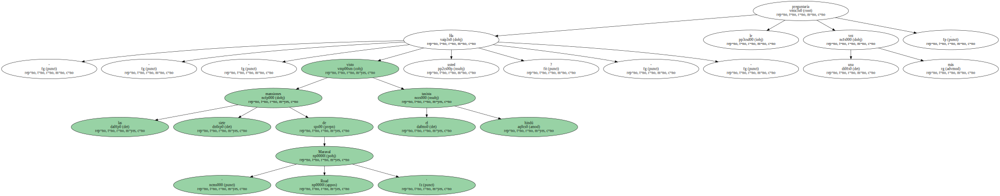- - Me las enseñó usted.
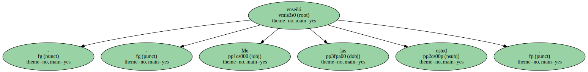- - Es cierto.
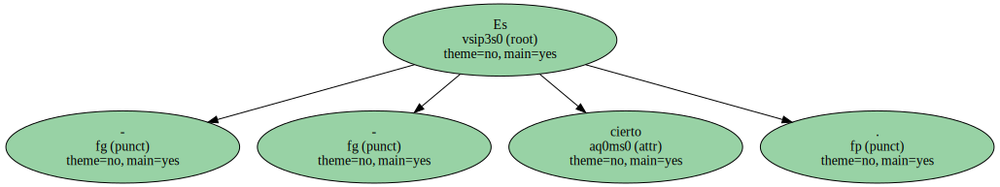Una mano en el volante , la otra lanzando dedos oscuros y nombres de casas que constituían lo más importante del patrimonio arquitectónico de Port Spain.
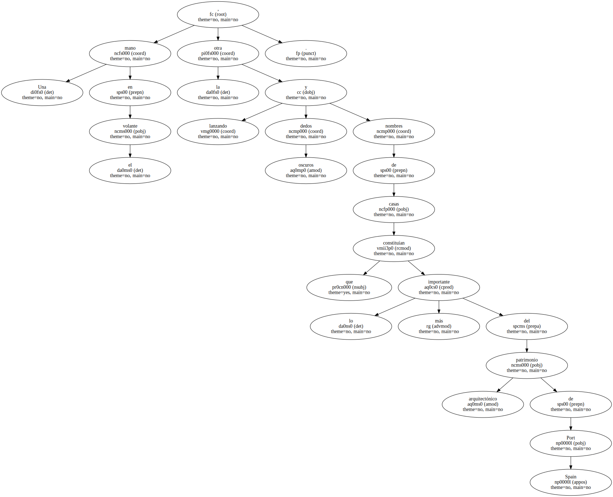- - Stollmeyer's Castle , White Hall , Roodal's Residence.
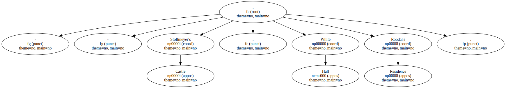La oscuridad que envolvía a toda la isla presagiaba el fin del año y tal vez el fin del mundo.
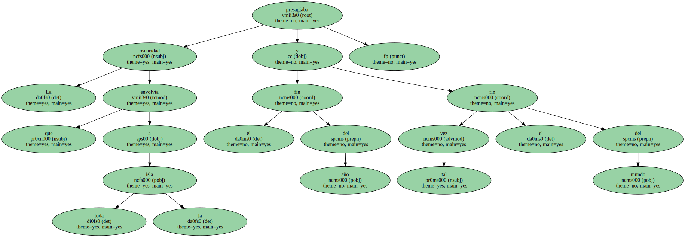El taxista levantaba el dedo oscuro , un dedo de gitano , hacia el cielo.
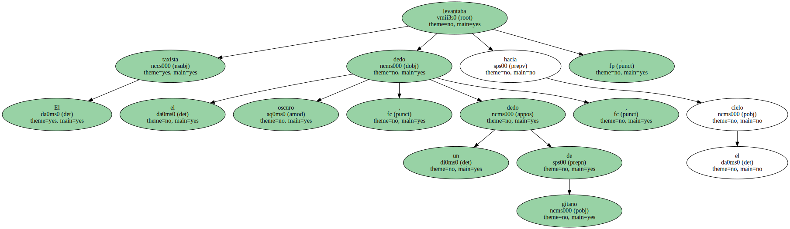- - Todo empezó desde que subieron allí arriba.
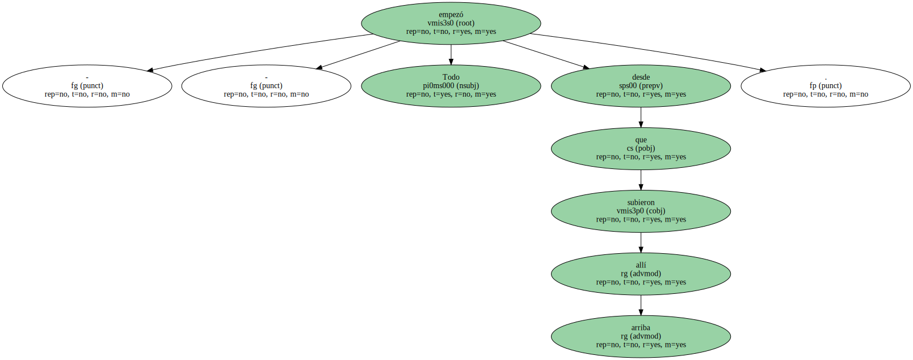- - - Quién subió allí arriba.
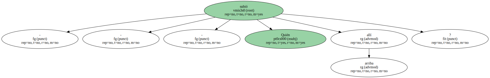- - Los rusos y los americanos.
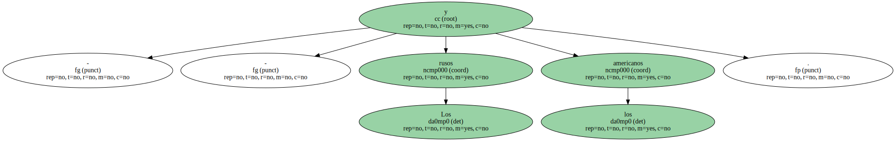Desde que subieron allí arriba , el invierno es verano y el verano es invierno.
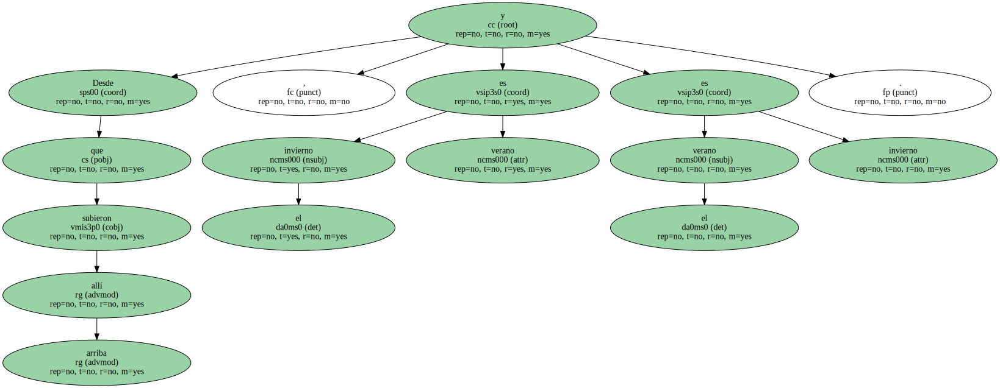